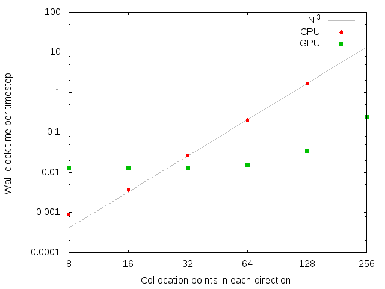
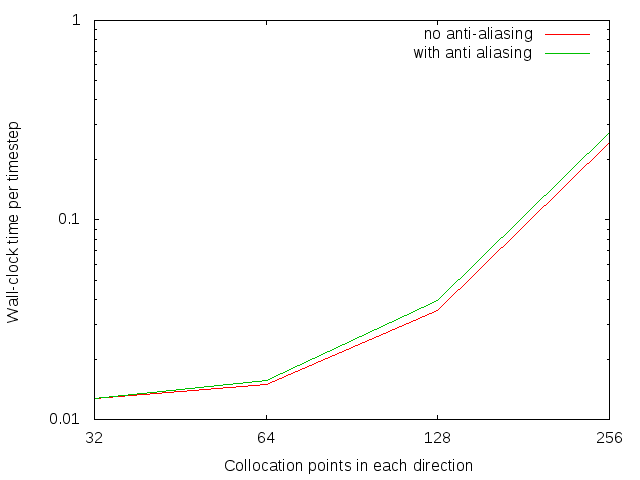
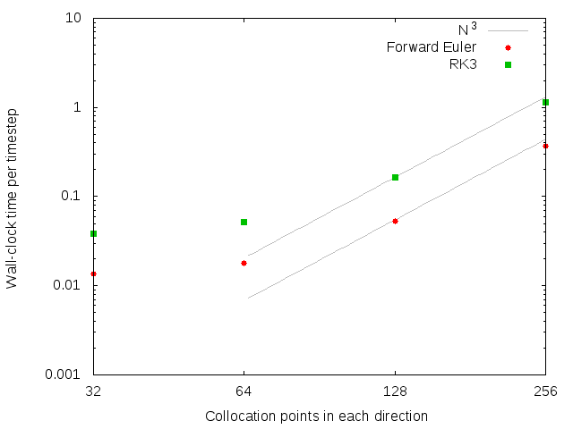

The state of the code as of this commit has only forward Euler timestepping. It has no CFL condition (so timestep is constant) and also lacks aliasing masking. I did some runs just to see how the time-per-step varied between the CPU and GPU.

Anti-aliasing does increase the runtime:

The time per step increases by about a factor of 3 (as expected). The two lines shown below differ by a factor of 3.
